Aula 05
Endereço · indireção · alocação dinâmica · registros
Aula de implementação — onde um dado está e como um dado composto se organiza.
Camada 1
Um guarda-volumes tem milhares de armários, cada um com um número na porta. Para que um colega busque algo, basta dizer o número do armário: com ele, o colega abre, olha e até troca o que está lá dentro.
A aula gira em torno de duas ideias: anotar onde uma coisa está e agrupar várias informações numa ficha só.
Camada 2
A memória do computador é uma longa sequência de posições. Cada posição é identificada por um número inteiro, o seu endereço (address).
Endereço é para a memória o que o número da porta é para o armário.
Uma variável é um nome que o programa dá a uma região da memória. Toda variável tem:
idade;int;19;&O operador de endereço &, aplicado a uma variável, devolve a posição onde ela está.
&idade /* o endereco de idade, e nao o valor 19 */Um ponteiro (pointer) é uma variável cujo valor é um endereço.
int *p; /* p e um ponteiro para int */
p = &idade; /* p passa a guardar o endereco de idade */Diz-se então que p aponta para idade.
*O operador de indireção *, também chamado de desreferência,
dá acesso à variável apontada — sem usar o nome dela.
*p = 20; /* escreve 20 em idade, passando pelo ponteiro */NULL: o ponteiro que não apontaUm ponteiro que não aponta para variável nenhuma recebe o valor especial NULL.
Ele marca ausência, e pode ser testado antes de qualquer acesso: if (p == NULL).
Uma struct (estrutura, também chamada registro) agrupa variáveis de tipos possivelmente diferentes, chamadas campos.
Um Aluno pode reunir uma matrícula (int), uma turma (char) e uma nota (double).
Dois operadores dão acesso aos campos, conforme a forma de acesso ao registro:
aluno.nota;pa->nota.
Turma, o livro-texto usa o mesmo vocabulário. Nas convenções de pseudocódigo, Cormen e coautores
organizam os dados em objetos com atributos, tratam a variável que
representa um objeto como um ponteiro e chamam de NIL o ponteiro
que não se refere a nada. Em C: objeto é struct, atributo é campo, NIL é NULL — e o
x.nota do livro corresponde a x->nota, porque lá x já é um ponteiro.
Cormen et al., Algoritmos: Teoria e Prática, cap. 2 — convenções de pseudocódigo
A economia do ponteiro é deliberada:
Por ser só um endereço, é pequeno, rápido de copiar e dá acesso a um dado sem copiá-lo.
Camada 3
Três linhas resumem todo o uso de um ponteiro.
int idade = 19;
int *p = &idade; /* p guarda o endereco de idade */
*p = 20; /* escreve 20 na variavel apontada */Nos diagramas, os endereços são ilustrativos: os reais são números grandes, que mudam a cada execução.
* tem dois papéisO mesmo símbolo muda de sentido conforme a posição em que aparece.
int *p: "p é um ponteiro para int".*p = 20: "a variável cujo endereço está em p".Um ponteiro suspenso (dangling pointer) ainda guarda um endereço,
mas o conteúdo ali já não pertence ao programa — por exemplo, porque foi devolvido com free.
free(p); /* devolve a memoria */
p = NULL; /* p passa a dizer, explicitamente, que nao aponta para nada */Em C, toda chamada copia os argumentos para os parâmetros. Por isso esta função não troca nada:
// Recebe COPIAS dos valores de quem chamou. Trocar x e y aqui dentro
// nao altera as variaveis originais.
void trocar_por_valor(int x, int y) {
int guardado = x;
x = y;
y = guardado;
}Para alterar variáveis de quem chama, a função recebe os endereços delas e escreve por eles.
// Recebe os ENDERECOS das variaveis de quem chamou. Escrevendo em *x e *y,
// a funcao altera as variaveis originais.
void trocar(int *x, int *y) {
int guardado = *x;
*x = *y;
*y = guardado;
}A chamada é trocar(&a, &b): copia-se o endereço, e pelo endereço chega-se à variável original.
mallocQuando a quantidade de dados só é conhecida na execução, malloc reserva uma região e devolve o endereço do início.
int *valores = malloc(quantidade * sizeof(int));
if (valores == NULL) {
printf("erro: memoria insuficiente\n");
exit(1);
}mallocCada parte do trecho anterior tem um motivo.
sizeof, que informa quantos bytes um tipo ocupa.malloc devolve NULL.A região não tem nome: só é alcançada pelo endereço guardado no ponteiro.
free: exatamente uma vezToda região obtida com malloc é devolvida com free exatamente uma vez.
free: erro grave, que corrompe dados.A declaração descreve o formato do registro; o typedef cria o apelido Aluno.
typedef struct Aluno {
int matricula;
char turma;
double nota;
} Aluno;Cada campo é acessado com o ponto: aluno.matricula = 101;
Com Aluno *pa = &aluno;, há duas formas equivalentes de acessar um campo do registro apontado.
(*pa).nota /* parenteses obrigatorios: o ponto vem antes do * */
pa->nota /* a forma abreviada, mais legivel */Recebendo o endereço, a função altera o registro original — e não uma cópia dele.
// Recebe o ENDERECO do aluno, para que a alteracao valha no registro
// original de quem chamou, e nao numa copia.
void aluno_aplicar_bonus(Aluno *aluno, double bonus) {
aluno->nota = aluno->nota + bonus;
}mallocUma função de criação reserva o registro, preenche os campos e devolve o endereço.
// Cria um Aluno em memoria alocada dinamicamente. Diferente de uma variavel
// declarada dentro da funcao, esse registro continua existindo depois
// que a funcao termina, ate que alguem chame free.
Aluno *aluno_criar(int matricula, char turma, double nota) {
Aluno *novo = malloc(sizeof(Aluno));
if (novo == NULL) {
printf("erro: memoria insuficiente\n");
exit(1);
}
novo->matricula = matricula;
novo->turma = turma;
novo->nota = nota;
return novo;
}Quem recebe o endereço passa a ser responsável pelo free.
Quatro regras protegem o programa de todos os erros desta aula:
NULL ou aponta para algo que ainda pertence ao programa;NULL;malloc é testado e devolvido com free uma única vez;free(p), p recebe NULL.Camada 4
Tomar o endereço de uma variável e em seguida acessar esse endereço devolve a própria variável.
*(&x) = x
Lê-se: "o conteúdo do endereço de x é x". É por isso que *p = 20 altera idade quando p = &idade.
Duas regras do modelo não descrevem resultados, e sim erros:
*p quando p vale NULL;*p depois de free(p).As regras completas estão em Schildt, C Completo e Total.
Matematicamente, um registro é uma tupla: uma sequência ordenada de valores, um por campo.
(101, 'A', 7.5)
Acessar aluno.nota é escolher o terceiro componente; e p->nota é o mesmo que (*p).nota.
Camada 5
Um único cálculo de endereço e um único acesso, qualquer que seja o tamanho dos dados.
| Operação | Tempo |
|---|---|
&x, *p, p->campo | O(1) |
| passar um ponteiro a uma função | O(1) |
| passar uma struct de k campos por valor | O(k) |
O(1) lê-se "custo constante"; O(k), "cresce no ritmo do número de campos".
O que a análise registra para a alocação dinâmica é a memória ocupada.
malloc(n * sizeof(int)) reserva memória proporcional a n: O(n).Camada 6
Quase todo programa C que vai além do básico depende deles.
scanf("%d", &idade) — o endereço da variável a preencher.fopen devolve um ponteiro para uma struct FILE.malloc.Duas variações do ponteiro simples, aqui apenas sinalizadas:
int ** — ponteiro para ponteiro: guarda o endereço de outro ponteiro;void * — endereço sem tipo, o que malloc devolve.Bloco 2
Os passos seguem o programa da aula, na ordem em que ele executa. Os endereços são ilustrativos.
int idade = 19Observe as quatro características da variável: nome, tipo, valor e endereço.
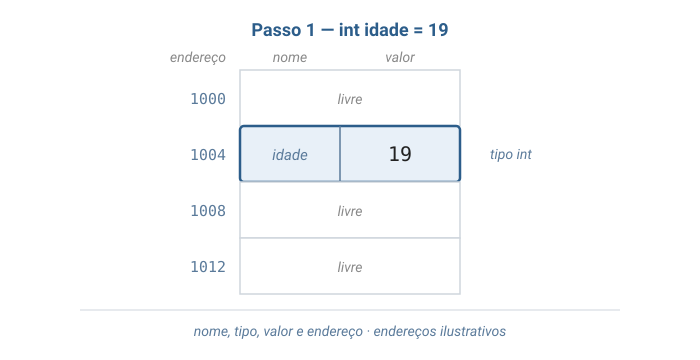
int *p = &idadeO ponteiro também ocupa uma posição, mas o que ele guarda é um endereço — o de idade.
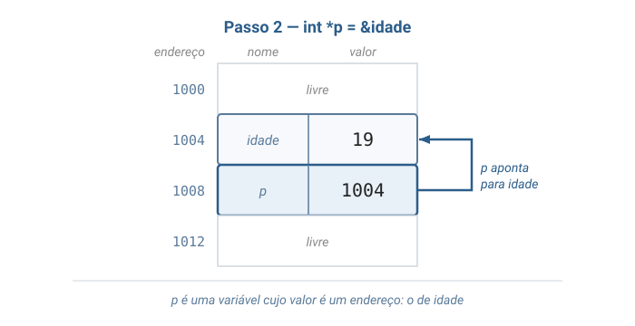
*p = 20A escrita segue a seta e muda idade; o ponteiro em si não muda.
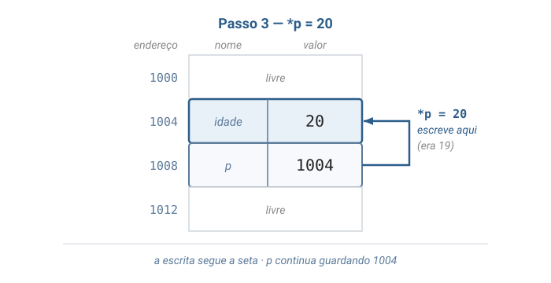
trocar_por_valor(a, b)Compare os dois quadros: a função trocou as cópias, e a e b ficaram como estavam.
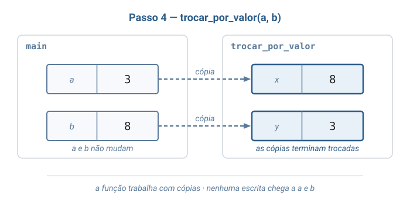
trocar(&a, &b)Agora os parâmetros guardam endereços, e as escritas seguem as setas até as variáveis originais.
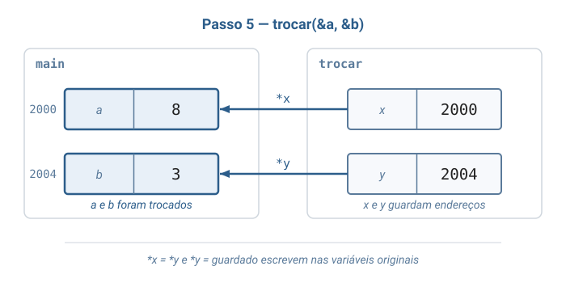
valores = malloc(3 * sizeof(int))A região reservada não tem nome: o único caminho até ela é o endereço guardado em valores.
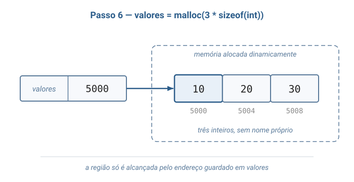
free(valores); valores = NULLOs dois lados mostram a mesma região devolvida; só o da direita deixa o ponteiro em estado seguro.
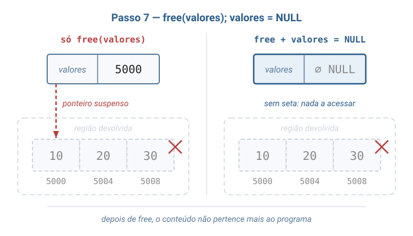
Aluno alunoOs campos ficam juntos, sob um único nome, e cada um é alcançado pelo operador ponto.
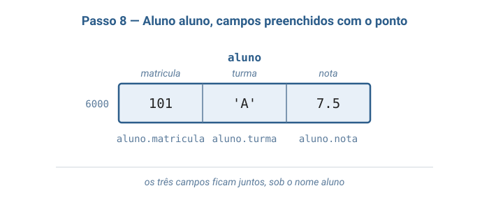
Aluno *pa = &aluno; pa->nota = 8.0O ponteiro aponta para o registro inteiro; a seta escolhe, dentro dele, o campo nota.
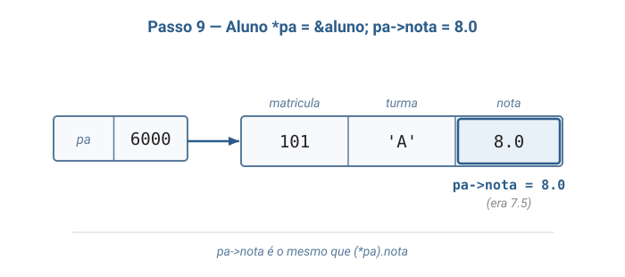
nota = 8.0 altera o campo nota de 7.5 para 8.0">aluno_aplicar_bonus(&aluno, 1.5)A função recebeu um único endereço e, por ele, alterou a nota do registro original.
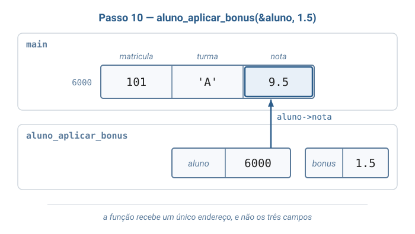
novo = aluno_criar(102, 'B', 6.0)O registro permanece na memória alocada dinamicamente até que free(novo) o devolva.
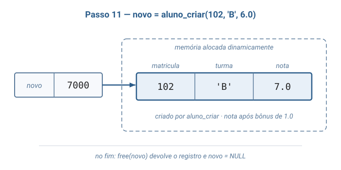
Depois do free, novo = NULL impede que o endereço antigo seja usado.
Bloco 3
Como o scanf consegue guardar o número digitado dentro da minha variável?
&, o scanf recebe uma cópiaSe a chamada fosse scanf("%d", idade), a função receberia
só uma cópia do valor atual de idade.
O número digitado ficaria nessa cópia — e se perderia no fim da chamada.
&, o scanf escreve na variávelCom &idade, a função recebe o endereço e escreve diretamente na variável,
como trocar(&a, &b).
printf("%d", idade)dispensa o&: para apenas ler, uma cópia basta.
Um cadastro escolar guarda dados de tipos diferentes por aluno e não sabe, de antemão, quantos alunos haverá.
malloc cria cada registro quando ele é necessário;free devolve o que deixou de ser útil.
Turma, toda vez que vocês abrirem um arquivo em C com fopen, vão receber um
FILE *: um ponteiro para uma struct que a própria biblioteca preenche. Nenhuma função
de leitura ou escrita recebe o arquivo em si — todas recebem esse endereço.
Schildt, C Completo e Total, capítulo de entrada e saída em arquivos
Bloco 4
ponteiros_structs.cCada função demonstrar_... isola um conceito da aula, na ordem da visualização.
Tudo está em um único arquivo —#includes, struct, funções emain()— para que o programa seja lido de cima a baixo, sem saltar entre arquivos.
AlunoO tipo usado nas demonstrações: um registro que agrupa três campos de tipos diferentes.
#include <stdio.h>
#include <stdlib.h>
// Um Aluno agrupa, sob um unico nome, dados de tipos diferentes.
typedef struct Aluno {
int matricula;
char turma;
double nota;
} Aluno;As duas formas de passar argumentos: cópias dos valores ou os endereços das variáveis.
// Recebe COPIAS dos valores de quem chamou. Trocar x e y aqui dentro
// nao altera as variaveis originais.
void trocar_por_valor(int x, int y) {
int guardado = x;
x = y;
y = guardado;
}
// Recebe os ENDERECOS das variaveis de quem chamou. Escrevendo em *x e *y,
// a funcao altera as variaveis originais.
void trocar(int *x, int *y) {
int guardado = *x;
*x = *y;
*y = guardado;
}Para ler, uma cópia basta; para alterar, a função precisa do endereço.
// Recebe uma COPIA do aluno: basta para ler os campos, nao para altera-los.
void aluno_imprimir(Aluno aluno) {
printf("matricula %d, turma %c, nota %.1f\n",
aluno.matricula, aluno.turma, aluno.nota);
}
// Recebe o ENDERECO do aluno, para que a alteracao valha no registro
// original de quem chamou, e nao numa copia.
void aluno_aplicar_bonus(Aluno *aluno, double bonus) {
aluno->nota = aluno->nota + bonus;
}aluno_criarPara criar um registro que continua existindo depois que a função termina, malloc.
// Cria um Aluno em memoria alocada dinamicamente. Diferente de uma variavel
// declarada dentro da funcao, esse registro continua existindo depois
// que a funcao termina, ate que alguem chame free.
Aluno *aluno_criar(int matricula, char turma, double nota) {
Aluno *novo = malloc(sizeof(Aluno));
if (novo == NULL) {
printf("erro: memoria insuficiente\n");
exit(1);
}
novo->matricula = matricula;
novo->turma = turma;
novo->nota = nota;
return novo;
}demonstrar_ponteiro e demonstrar_trocaEndereço, indireção e as duas trocas — os passos 1 a 5 da visualização.
// Um ponteiro guarda o endereco de outra variavel e, por ele,
// e possivel ler e alterar essa variavel.
void demonstrar_ponteiro(void) {
int idade = 19;
int *p = &idade; // p recebe o endereco de idade
printf("idade = %d, *p = %d\n", idade, *p);
printf("p == &idade vale %d\n", p == &idade);
*p = 20; // escreve na variavel idade passando pelo ponteiro
printf("depois de *p = 20, idade = %d\n", idade);
}
// So a versao que recebe enderecos consegue trocar os valores de a e b.
void demonstrar_troca(void) {
int a = 3;
int b = 8;
trocar_por_valor(a, b);
printf("depois de trocar_por_valor(a, b): a = %d, b = %d\n", a, b);
trocar(&a, &b);
printf("depois de trocar(&a, &b): a = %d, b = %d\n", a, b);
}demonstrar_alocacaoO ciclo completo da memória dinâmica: pedir, testar, usar, devolver — os passos 6 e 7.
// A quantidade de valores so e conhecida durante a execucao, entao a
// memoria e pedida com malloc e devolvida com free.
void demonstrar_alocacao(int quantidade) {
int *valores = malloc(quantidade * sizeof(int));
if (valores == NULL) {
printf("erro: memoria insuficiente\n");
exit(1);
}
for (int i = 0; i < quantidade; i++) {
valores[i] = (i + 1) * 10;
}
printf("valores alocados:");
for (int i = 0; i < quantidade; i++) {
printf(" %d", valores[i]);
}
printf("\n");
free(valores); // devolve a memoria; o conteudo deixa de ser nosso
valores = NULL; // assim valores nao guarda mais um endereco invalido
}demonstrar_structO mesmo registro acessado pelo ponto, pela seta e por uma função — os passos 8 a 10.
// Campos acessados pelo ponto, pelo ponteiro com seta e por uma funcao
// que recebe o endereco do registro.
void demonstrar_struct(void) {
Aluno aluno;
aluno.matricula = 101;
aluno.turma = 'A';
aluno.nota = 7.5;
aluno_imprimir(aluno);
Aluno *pa = &aluno;
pa->nota = 8.0; // o mesmo que (*pa).nota = 8.0
aluno_imprimir(aluno);
aluno_aplicar_bonus(&aluno, 1.5);
aluno_imprimir(aluno);
}demonstrar_struct_dinamicaUm registro criado com aluno_criar, alterado pela seta e liberado — o passo 11.
// Um aluno criado dinamicamente existe ate que free o devolva.
void demonstrar_struct_dinamica(void) {
Aluno *novo = aluno_criar(102, 'B', 6.0);
aluno_aplicar_bonus(novo, 1.0);
aluno_imprimir(*novo);
free(novo); // devolve o registro criado por aluno_criar
novo = NULL;
}
Turma, repare na última linha de demonstrar_struct_dinamica. Depois de
free(novo), escrever novo->nota = 10.0 ainda compila — mas escreve numa
região que já foi devolvida. Com novo = NULL, o mesmo erro deixa de ser silencioso:
o programa normalmente é interrompido imediatamente, no ponto exato do problema.
mainA main() só chama as demonstrações, na ordem da aula.
int main(void) {
printf("== Ponteiro ==\n");
demonstrar_ponteiro();
printf("\n== Passagem por valor e por referencia ==\n");
demonstrar_troca();
printf("\n== Alocacao dinamica ==\n");
demonstrar_alocacao(3);
printf("\n== Struct ==\n");
demonstrar_struct();
printf("\n== Struct alocada dinamicamente ==\n");
demonstrar_struct_dinamica();
return 0;
}Os avisos do compilador ficam ativados com -Wall -Wextra; o programa deve compilar sem nenhum.
gcc -Wall -Wextra -o ponteiros_structs ponteiros_structs.c
./ponteiros_structsA comparação p == &idade imprime 1: em C, verdadeiro vale 1.
== Ponteiro ==
idade = 19, *p = 19
p == &idade vale 1
depois de *p = 20, idade = 20
== Passagem por valor e por referencia ==
depois de trocar_por_valor(a, b): a = 3, b = 8
depois de trocar(&a, &b): a = 8, b = 3
== Alocacao dinamica ==
valores alocados: 10 20 30
== Struct ==
matricula 101, turma A, nota 7.5
matricula 101, turma A, nota 8.0
matricula 101, turma A, nota 9.5
== Struct alocada dinamicamente ==
matricula 102, turma B, nota 7.0O próprio compilador instrumenta o programa para detectar acessos inválidos durante a execução.
gcc -Wall -Wextra -g -fsanitize=address -o ponteiros_structs ponteiros_structs.c
./ponteiros_structsMesma saída e nenhum relatório de erro: nenhum acesso inválido aconteceu.
Leituras complementares:
O ponteiro diz onde o dado está; a struct diz como ele se organiza.